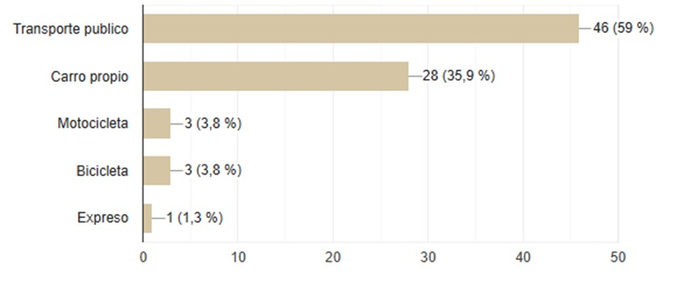
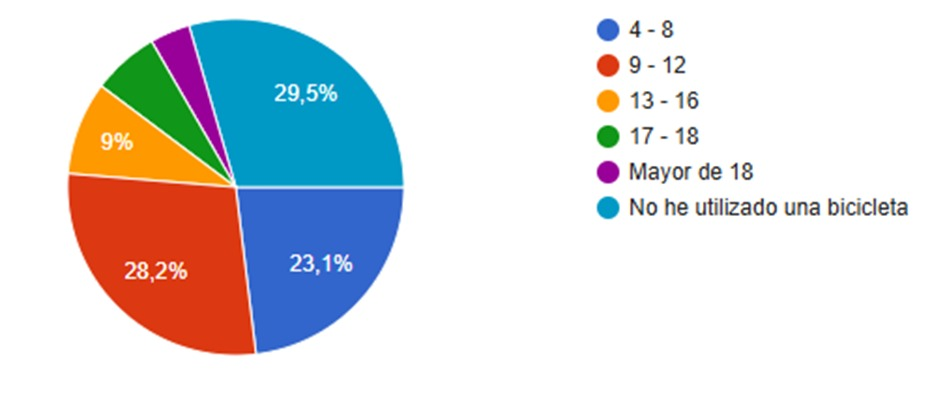
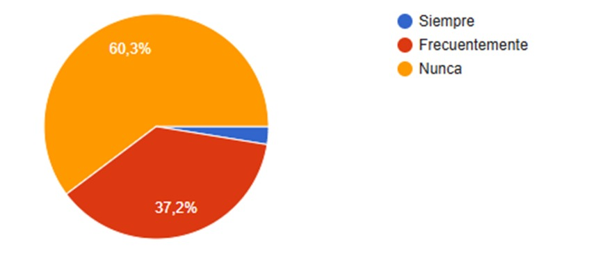
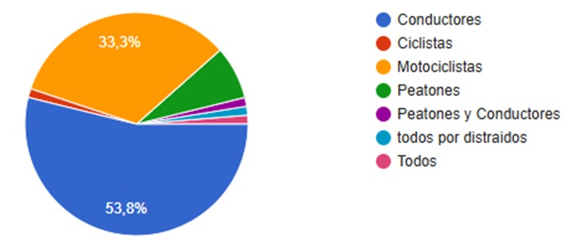
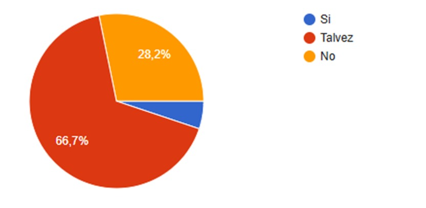
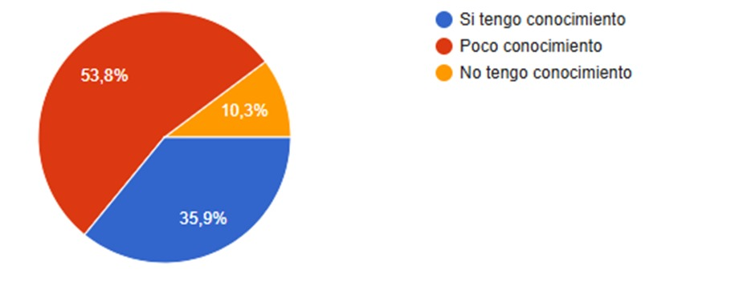
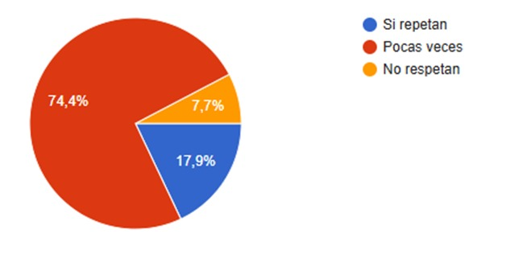
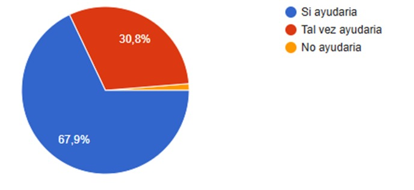
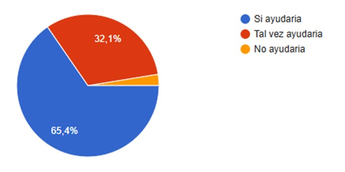
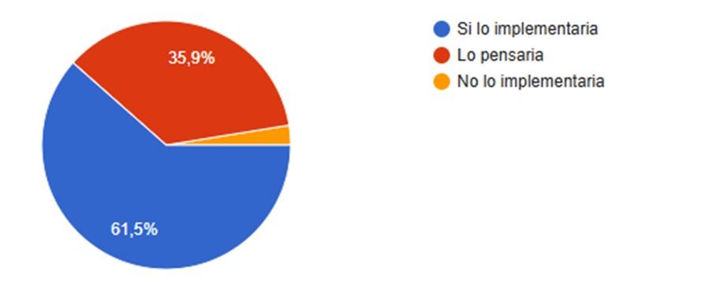

Pregunta 1.- ¿Que medio de transporte utiliza usted comúnmente para movilizarse?

Considerando los resultados mostrados, se puede observar que la mayoría de los encuestados utilizan el transporte público como su principal medio de movilización, representando un 59% del total. Esto indica que más de la mitad de las personas dependen de este tipo de transporte en su día a día. Esto evidencia que el uso de la bicicleta como medio de transporte es bajo entre los encuestados. dada la vulnerabilidad de los ciclistas en la vía pública estos resultados refuerzan la importancia de implementar sistemas de detección y advertencia que promuevan su seguridad..
Pregunta 2.- Desde que edad usted ha utilizado el medio transporte ¨Bicicleta¨

Los resultados se relacionan con la pregunta 1 ya que reflejan que el 29,5% de los encuestados nunca han utilizado una bicicleta. Esto indica que una parte significativa de la población no tiene experiencia directa con este medio de transporte y debido a esto optan por la utilización de otro medio de transporte.
Pregunta 3.- ¿Con que frecuencia utiliza usted una bicicleta?

Es relevante señalar que el 60,3% de los encuestados indicó que no utilizado una bicicleta. Este porcentaje refleja una tendencia significativa hacia la falta de uso de este medio de transporte igualmente se relaciona con la pregunta 2 sobre que los encuestados nunca han utilizado este medio de transporte ya sea por diversos aspectos sociales.
Pregunta 4.- ¿Según su criterio quien es el culpable de cometer más accidentes viales?

De acuerdo con los resultados, el 53.8% de los encuestados considera que los conductores son los principales responsables de cometer más accidentes viales, destacando el rol en la seguridad vial. Así mismo con un 33.3% atribuye la culpa a los motociclistas esto equivale a que mas del 87.1% esta de acuerdo que ambos son los que cometen más accidentes viales y esto conlleva a decesos de personas ya sea que el conductor o motociclista iba a exceso de velocidad o distraído.
Pregunta 5.- Según su criterio piensa que los conductores respetan las señaléticas viales

Según los resultados obtenido se presenta el 66,7% de los encuestados concuerdan que tal vez los conductores respetan las señaléticas viales pero se relaciona con la anterior pregunta en donde los conductores cometen mas accidentes esto se puede deber a que van a un exceso de velocidad y eso hace que hoy en dio veamos a los conductores como un peligro en las vías.
Pregunta 6.- Tiene conocimiento acerca de las medidas de seguridad al momento de utilizar una bicicleta en una vía publica

Según el análisis el 35.9% tiene un conocimiento adecuado sobre medidas de seguridad, mientras que el 53.8% tiene poco conocimiento Esto se puede deber a que basándonos en la pregunta 3 la bicicleta no es un medio utilizado comúnmente eso se puede deber a que un ciclista se encuentra vulnerable en las vías.
Pregunta 7.- Tiene conocimiento acerca de las medidas de seguridad al momento de utilizar una bicicleta en una vía publica

Basándonos en los resultados las normas de seguridad son respetadas pocas veces con un 74.4% evidenciando un entorno vial inseguro. Este resultado se alinea con la pregunta 4 con la percepción de culpabilidad , donde se identifica la distracción como un problema central, y así mismo en la pregunta 6 que conlleva a un bajo conocimiento sobre normas de seguridad.
Pregunta 8.- ¿Cree que un sistema de advertencia ayudaría a mejorar la seguridad en las intersecciones?

De acuerdo con los resultados, un porcentaje significativo de los encuestados equivalente al 67,9% considera que un sistema de advertencia ayudaría a mejorar la seguridad en las intersecciones, relacionado con los resultados de la pregunta 4, donde la mayoría identifica a los conductores como los principales responsables de los accidentes viales. Esto indica que las intersecciones son puntos críticos de riesgo y que una advertencia temprana podría reducir los conflictos entre usuarios de la vía.
Pregunta 9.- Considera usted que un sistema de detección con la utilización de sensores ayudaría a disminuir los accidentes viales

El resultado de esta pregunta muestra que una amplia mayoría, como el 65,7&, opina que un sistema de detección basado en sensores sería efectivo para disminuir los accidentes viales. esta tendencia puede estar influenciada por los resultados de la pregunta 6, donde un porcentaje considerable indicó tener poco conocimiento sobre medidas de seguridad vial. Esto sugiere que los encuestados perciben en los sensores una solución tecnológica accesible y confiable para enfrentar problemas de seguridad vial.
Pregunta 10.- ¿Según su criterio implementaría usted un sistema de detección en el sector donde vive?

La pregunta refleja que un 61,5% de los encuestados estaría dispuesto a implementar un sistema de detección en su sector, lo que refuerza la aceptación hacia tecnologías que mejoren la seguridad. Esta tendencia puede relacionarse con la pregunta 7, donde los ciclistas no siempre respetan las normativas, aumentando la percepción de vulnerabilidad en las vías y destacando la necesidad de soluciones automatizadas.